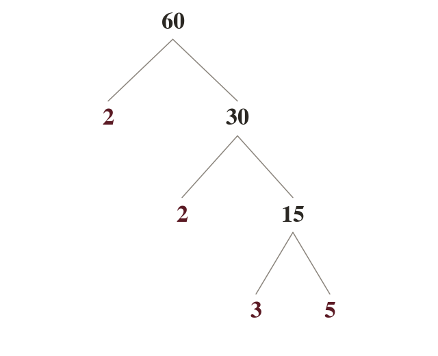
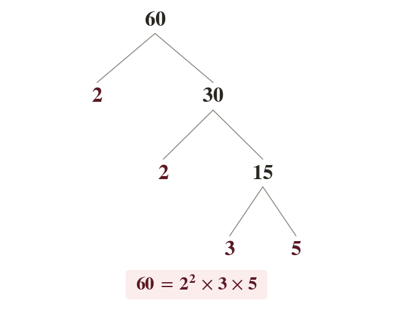
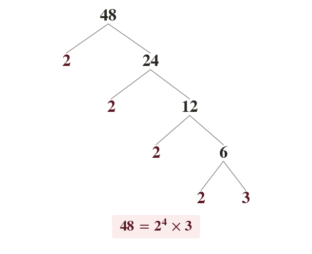
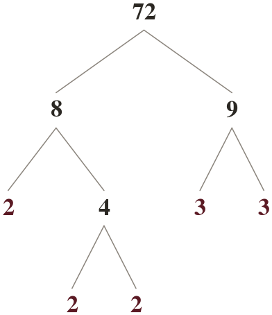
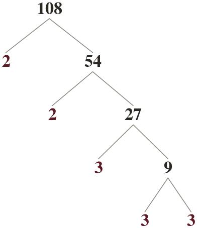
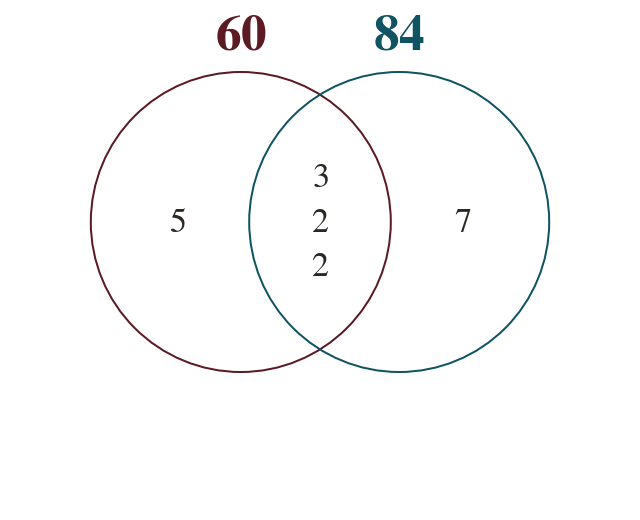
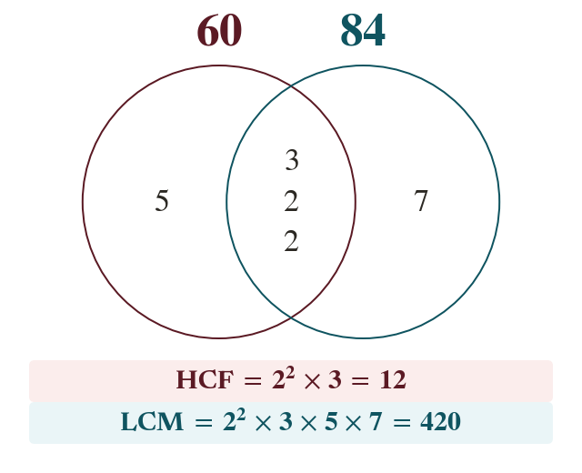
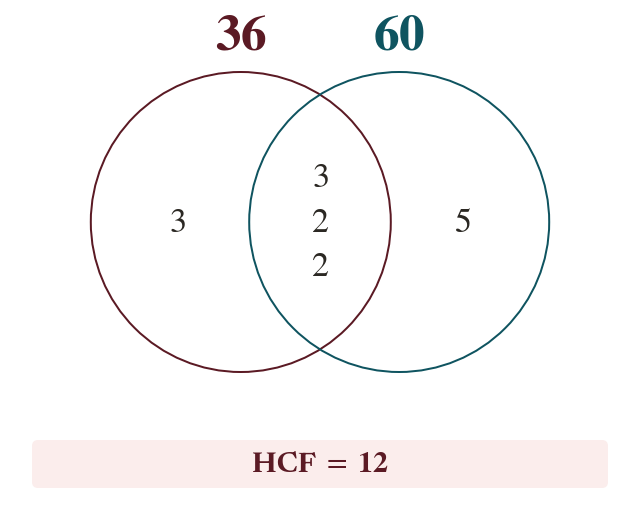
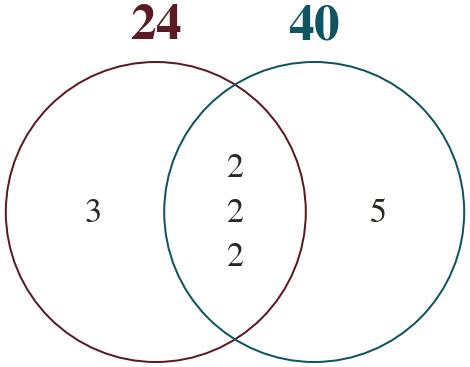
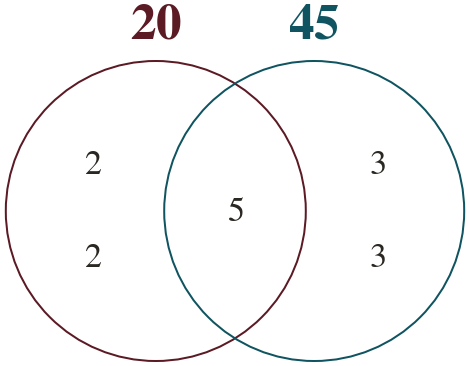

You already know how to find the HCF and LCM by listing - but for bigger numbers, listing every factor or multiple gets slow and error-prone. Prime factor decomposition breaks any number down into its unbreakable building blocks, and once you can see those, HCF and LCM become a matter of reading them off a diagram instead of a long list.
By the end you’ll know…
Every whole number above is prime, or a product of primes in exactly one way.
A factor tree splits a number until every branch ends in a prime, and the primes are the same whichever pair is split first.
Index form collects the repeats:
In a prime-factor Venn, the HCF is the product of the intersection and the LCM the product of the whole diagram.
By the end you can
G4Find the prime factor decomposition of a number using a factor tree (index and non-index form).
G5Use a Venn diagram of prime factors to find the HCF and LCM of two numbers.
Work down the page at your own pace. Write every answer in your book first, then click to check it.
01
Do Now
About 5 minutes
1
a) Is prime? b) Write using index notation.
a) Yes, is prime b)
2
Find the HCF and LCM of and by listing.
HCF LCM
3
Use divisibility rules to find all the factors of
Remember these?
LAST LESSON
Hot dogs come in s, buns in s. What is the smallest number of each you can buy to have none left over?
LCM(8, of each.
LAST WEEK
List all the factor pairs of
LAST TERMWork out
LAST YEARWork out
02
Learn
Read each card, then follow the worked examples one step at a time.

Prime factor decomposition
Every composite number is a unique product of primes. A factor tree splits it until every branch ends in a prime.
Every composite number can be broken down into a unique product of prime numbers - its prime factor decomposition. A factor tree finds this by repeatedly splitting a number into a factor pair until every branch ends in a prime.

Index form
Write repeated primes in index form:
The decomposition can be tidied using index notation for repeated primes, e.g.
WORKED EXAMPLE A
Draw a factor tree for and write its prime factor decomposition.

WORKED EXAMPLE B
Rewrite the decomposition of using index notation.
YOUR TURN · a
Draw a factor tree for
Hint. start by splitting into any factor pair, e.g. then keep splitting until every branch is prime.
split then and so every branch ends prime

YOUR TURN · b
Rewrite the decomposition of using index notation.
03
Check your understanding
Pick an answer. If it's wrong, the feedback tells you which mistake it was.
What does it mean for a number's prime factor decomposition to be "unique"?
Not quite. It's unique because there's only one set of primes that multiplies to it.
Not quite. Unique means only one answer for that number, not a different count.
Yes. Every number has exactly one set of prime factors.
Not quite. Any method gives the same primes. Unique means one answer.
A factor tree for ends in the branches What is the prime factor decomposition of in index form?
Not quite. appears once. The is repeated
Not quite. The appears twice, not the
Not quite. Don't lose a two s make
Yes. There are two s, so
Which pair of factors would NOT be a valid first split in a factor tree for ?
Not quite. isn't prime yet, but you can split it again.
Yes. doesn't divide exactly, so and isn't a factor pair.
Not quite. so this split works.
Not quite. so this split works.
04
Practise
mark as you go
Checkpoint.Show your teacher before you go on
1.
Draw a factor tree for
,,,

2.
Write as a product of primes in index form.
Draw a factor tree for and write as a product of primes in index form
1
First split
2
Keep splitting
and
3
The prime leaves
4
Index form
Write the blanks in your book first, then tap each one to check.
05
Learn
Read each card, then follow the worked examples one step at a time.

Using a Venn diagram to find the HCF and LCM
A Venn diagram shows which prime factors two numbers share. Shared prime factors go in the overlap. The rest go in their own circle.
Placing the prime factors of each number in a Venn diagram helps us see which they have in common. Factors common to both go in the overlap; the rest go in the outer parts of their own circle.

Reading off HCF and LCM
Multiply the numbers in the overlap to get the HCF. Multiply every number in the whole diagram (overlap counted once) to get the LCM.
Prime factors into a Venn diagram
WORKED EXAMPLE C
Using the prime factors of and draw the Venn diagram and find the HCF.

WORKED EXAMPLE D
Using the same Venn diagram, find the LCM of and
YOUR TURN · c
Using the prime factors of and draw the Venn diagram and find the HCF.
Hint. which primes appear in BOTH lists?
the overlap holds the primes in both lists, sits in 24's part only and in 40's part only. HCF

YOUR TURN · d
Using the same Venn diagram, find the LCM of and
LCM of and
06
Check your understanding
Pick an answer. If it's wrong, the feedback tells you which mistake it was.
In a Venn diagram of prime factors, where do you find the HCF?
Not quite. Multiply the numbers in the overlap, don't count them.
Not quite. Multiplying everything gives the LCM, not the HCF.
Not quite. Multiply the overlap, don't add.
Yes. The overlap holds the shared primes. Multiply them for the HCF.
and What is the HCF?
Yes. Shared primes and
Not quite. Both and are shared
Not quite. is the LCM. The HCF is the shared primes
Not quite. Both and are shared
and What is the LCM?
Not quite. is the HCF. The LCM uses every prime
Not quite. counts the shared and twice. Use the diagram
Not quite. Include the shared
Yes. Every prime in the diagram, once
07
Practise
mark as you go
Checkpoint. and Show your teacher before you go on
1.
Draw the Venn diagram of these prime factors.
only
Both
only

2.
Use it to find the HCF.
HCF the overlap.
3.
Use it to find the LCM.
LCM every number in the diagram.
Using the prime factors of and draw a Venn diagram and find the HCF and the LCM
1
Prime factors
and
2
The overlap
the primes in both lists, and
3
The other regions
only holds , and only holds
4
HCF
multiply the overlap,
5
LCM
multiply every number in the diagram,
Write the blanks in your book first, then tap each one to check.
08
Exit ticket
On paper, on your own, then check
1
In your own words, what does "unique prime factor decomposition" mean?
It means every whole number greater than breaks down into prime factors in exactly one way (ignoring the order they're written in).
2
Draw a factor tree for and write its prime factor decomposition in index form.
3
and Use a Venn diagram to find the HCF and LCM.
HCF of and is (shared LCM of and is
Finished? Next lesson: 7.1.5 Triangular Numbers and Sequences.
09
How did it go?
Be honest: it's just for you
For each skill, tap the one that is true for you today. Your Revise pages start with anything you mark Not yet.
Find the prime factor decomposition of a number using a factor tree (index and non-index form).
Use a Venn diagram of prime factors to find the HCF and LCM of two numbers.
Your ratings are saved on this device only.
Practise more
After the lesson, or whenever you want more
Dr Frost
Log in, then search for a code to practise that skill.
161aWrite a number below as the product of its prime factors.
162cDetermine the Highest Common Factor (HCF) of numbers by prime factorising.
162dDetermine the Lowest Common Multiple (LCM) of numbers by prime factorising.